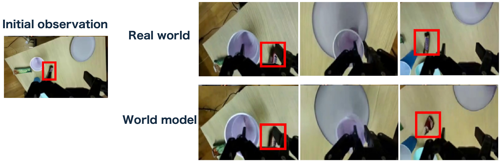
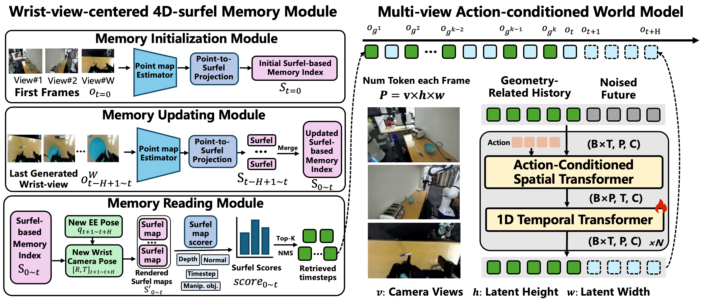
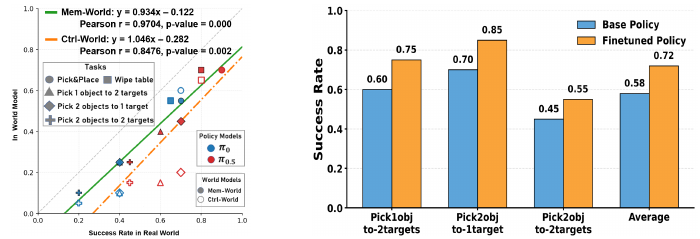

Real world / Ctrl-World / Mem-World · Watch the black snack when the wrist camera returns.
PERSISTENT PREDICTIONS19.21 PSNR
Wrist view, vs. 17.79 with matched fine-tuning
POLICY EVALUATION0.97 Pearson r
Closer agreement with real-world success
POLICY IMPROVEMENT58→72%
Real-world success after synthetic-data fine-tuning
01 / MOTIVATION
A memory failure can become a policy failure.
World models offer a way to evaluate and improve robot policies with less real-world interaction. They predict what happens after an action, allowing a policy to keep acting on generated observations.
But robot actions also change what is visible. Occlusions and wrist-camera motion can hide an object for many steps. When a policy returns to it, an inconsistent prediction can turn an otherwise successful action into a simulated failure.

The snack remains unchanged in the real world, yet becomes distorted in the imagined rollout.
?
What causes the distortion?
An important cause is missing visual context: the object to be generated may not appear in any of the model’s context frames. Recent frames can miss it, and fixed-interval sampling can skip the view that clearly showed it.
Retrieve evidence for what the robot is about to see.
02 / METHOD
Let future actions guide visual memory.
W-VMem connects historical images to scene surfaces and observation times, then retrieves the evidence needed for the next interaction.

Wrist-view-centered 4D surfel memory (W-VMem) + a multi-view action-conditioned world model.
01
MEMORY INITIALIZATION
Turn initial views into a memory of surfaces.
The first images from all three cameras provide complementary views of the scene. We estimate point maps and convert them into surfels, small surface elements that connect scene geometry to the observations that captured it.
What a surfel stores. Its position, surface normal, and radius describe a small piece of scene geometry. Observation timestamps record when that surface was seen, while a manipulated-object flag marks task-relevant surfaces.
What this makes possible. Memory links a region of the scene to the historical RGB frames that observed it. The world model can later retrieve those frames when the robot is about to look at the region again.
02
ACTION-GUIDED RETRIEVAL
Find the past views that support the next prediction.
The next action chunk provides a geometric query for memory. Forward kinematics gives the future end-effector poses; the fixed wrist-camera mounting then gives the corresponding camera poses. We use the average future wrist-camera pose to query the scene.
Surfels associated with each timestep are projected into the future camera’s image plane to form a rendered surfel map. Separate maps keep observations from different interaction stages distinct.
Score the visible evidence.
Visible surfels are scored using depth and surface-normal alignment, a task-relevance weight, and temporal recency. Scores are aggregated by timestep to rank the historical observations.
Select informative, diverse context.
Top-K selection with non-maximum suppression reduces redundant observations. The selected history frames, current observation, and future actions condition the multi-view world model to generate the next segment.
Why field-of-view overlap is not enough. Even when a historical view overlaps the next view, the gripper may be blocking the target. Accounting for surface visibility helps identify observations that actually reveal the object’s details.
03
MEMORY UPDATE
Link new surfaces to detailed wrist observations.
After generating the next multi-view segment, we estimate geometry from its wrist views, convert the observations into surfels, and merge them into memory. This links scene surfaces to the wrist-view observations that capture manipulation in detail.
Generated wrist views → new surfels → merged memory. Point colors visualize observation time.Open full-resolution figure ↗
Record when a surface was observed. The updated memory retains observation timestamps alongside geometry. In the visualization, different colors indicate different observation times.
Continue the rollout. The next action chunk queries the updated memory, starting another retrieve–predict–update cycle. The generated observations provide feedback for the policy’s next interaction.
Built on Ctrl-World. Temporal attention is fine-tuned on 11K DROID trajectories. The W-VMem module itself requires no training.
03 / EXPERIMENTS
From consistent predictions to useful imagined interaction.
RQ1
Can memory preserve the scene over long rollouts?
Occlusion and back-and-forth wrist-camera motion test whether objects remain consistent after leaving view.
Replay-based evaluation
Starting from the real initial observation, we replay recorded robot actions and autoregressively predict future views. Each model receives the same action sequence, and its rollout is compared with the corresponding real observations.
34 challenging DROID trajectories20 autoregressive iterations20 s per rollout
The lid after occlusion. Ctrl-World loses the transparent lid when it is briefly hidden by the gripper. Mem-World preserves its appearance as it comes back into view.
Rows: real observations, Ctrl-World, Mem-World. Columns: two external cameras and the wrist camera.
Long-horizon prediction on real action replays. Higher PSNR, SSIM and object consistency are better; lower LPIPS is better.
Camera
Method
PSNR ↑
SSIM ↑
LPIPS ↓
Obj. cons. ↑
External
Cosmos Predict 2.5
22.80
0.819
0.089
0.579
Ctrl-World
23.17
0.828
0.076
0.573
Ctrl-World (fine-tuned)
24.83
0.873
0.057
0.601
Mem-World
25.30
0.878
0.054
0.619
Wrist
Ctrl-World
17.34
0.623
0.281
0.476
Ctrl-World (fine-tuned)
17.79
0.642
0.276
0.487
Mem-World
19.21
0.691
0.236
0.524
The fine-tuned Ctrl-World baseline uses matched training settings. Object consistency measures DINOv2 similarity on segmented target objects. View the original paper table ↗
RQ2
Do imagined rollouts reflect real policy performance?
We evaluate π₀ and π₀.₅ on five tasks, including three two-stage manipulation tasks, with matched initial observations and world models adapted to the evaluation setup.
Pearson correlation ↑
0.85→0.97
Mean absolute error ↓
0.255→0.160
Mem-World’s predicted success rates agree more closely with real-world results, although the model still underestimates real success.
Three long-horizon interactions. Two objects to one target, one object to two targets, and two objects to two targets. The original oral presentation annotations highlight failures and successful continuation.
Watch the second grasp. After moving the cube, the policy returns for the fork. Distortion in Ctrl-World changes the feedback it receives; Mem-World preserves the fork’s appearance so the policy can continue.
RQ3
Can imagined experience improve a real policy?
We generate 200 trajectories per task from unseen object arrangements, manually select 20–30 successful trajectories with good action quality, and fine-tune π₀.₅ on these synthetic rollouts.
AVERAGE REAL-WORLD SUCCESS58% → 72%
A gain of 14 percentage points across three long-horizon tasks. Selected synthetic rollouts provide useful training data for real manipulation.

Left: policy evaluation against real-world success. Right: real-world success before and after synthetic-data fine-tuning.
TAKEAWAY
The next action tells us which past observations matter.
Mem-World uses this connection to preserve scene content, evaluate policies more reliably, and generate useful training experience. Multi-view consistency and explicit physical constraints remain open challenges.
If you find this work useful, please consider citing our paper.
@inproceedings{zheng2026memworld,
title={Memory-augmented Action-conditioned World Model
for Robot Manipulation},
author={Zheng, Zirui and Yu, Jiaqian and Peng, Xiongfeng
and Shi, Jun and Li, Mingyi and Zhang, Chao
and Li, Weiming and Wang, Dong and Lu, Huchuan
and Jia, Xu},
booktitle={Conference on Robot Learning},
year={2026},
url={https://arxiv.org/abs/2606.18960}
}